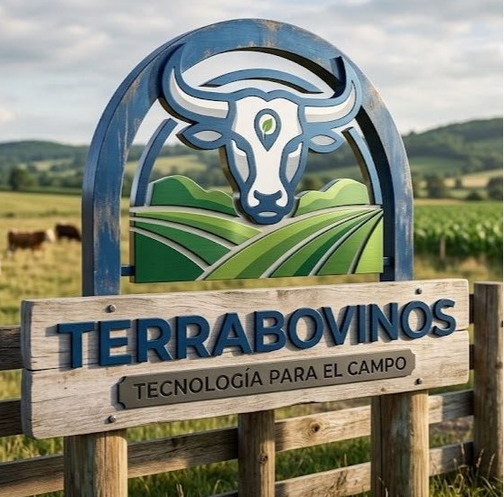

Terrabovinos: Pagina web dedicada a la administracion digital de fincas con respecto a bovinos

Visitar pagina webtaller de autos:Pagina web enfocada en la adminitracion de un taller de mantenimiento de vehiulos
 Visitar Sitio
Visitar Sitio
Retaurante gourmet Pagina web enfocada en la administracion y muestra de productos de un restaurante que ofrece todo tipo de comidas gourmet
 Visitar Sitio
Visitar Sitio